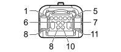

D004A FRONT/ENGINE COUPLING (FRONT)
- Path
- Electrical equipment > 3 CONNECTORS > D INTERMEDIATE COUPLINGS > D004 FRONT/ENGINE COUPLING > D004A FRONT/ENGINE COUPLING (FRONT)
- Kind
- connector pinout (pin -> wire colour -> other end)
- Applies to
- engines: 1.8; all production periods
- Interactive page
- https://sloeber94.github.io/elrnDB/alfa/159/en/#/939005864
Applies to: engines: 1.8; all production periods

Wiring | Colour |
|---|---|
NERO (black) |
Pin | Cable | Destination | |||
|---|---|---|---|---|---|
Sec.. | Colour | Node | Connect. | Pin | |
3 | 1,5 | A (light blue) | X | 18 | |
5 | |||||
5 | 1,5 | A (light blue) | X | 18 | |
3 | |||||
6 | 1 | N (black) | 17 | ||
7 | 1 | MN (brown with black stripe) | 4 | ||
8 | 1,5 | AN (light blue with black stripe) | 7 | ||